Built for engineers
Technical vocabulary with no softening. Everything assumed power-user knowledge.

Zeno is a portfolio-safe recreation of a product I designed for a Copenhagen-based EV startup. With the company's permission, I rebuilt it under a new brand. Every decision, constraint, and insight here is real. Only the branding changed.
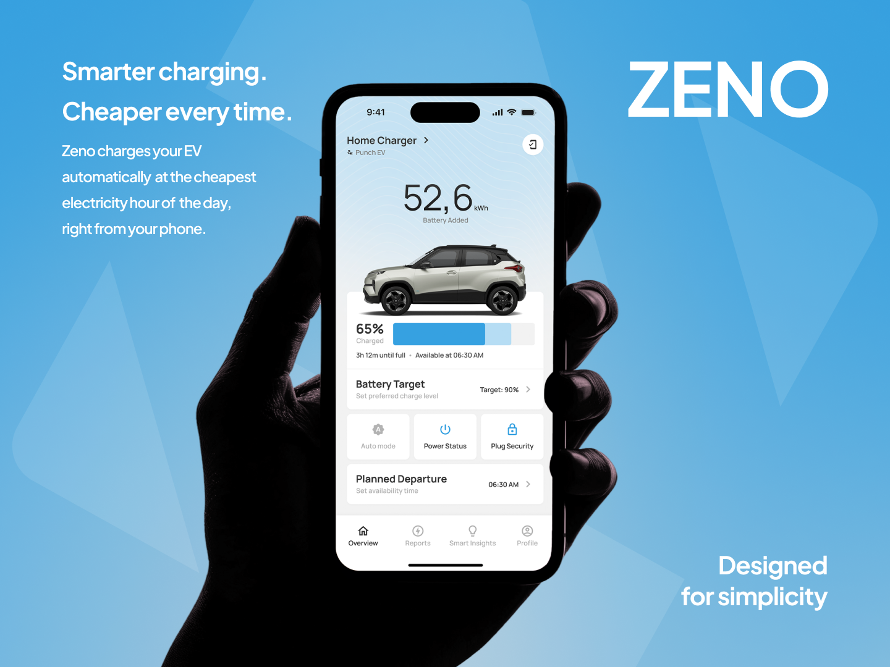
Electricity prices change every hour. Most EV owners charge at the wrong one. Zeno's algorithm monitors real-time prices, finds the cheapest window before your departure, and charges your car then. You set two things: when you need to leave, and how full you want the battery. The app handles everything else.
“You set the departure time. You set the target charge. The algorithm finds the cheapest hour and does the rest.”
Sole designer from day one. No existing product, no design system, no prior work to inherit. Only a vision from the CEO and CTO and a blank Figma file. What I know now about design systems, component thinking, and stakeholder communication came directly from the pressure of this project. Everything here was built from scratch.
Make a product built around a smart algorithm and dense real-time data feel effortless for someone who just wants their car ready in the morning.
The dashboard had to surface a lot without overwhelming the user. Every item on screen needed a clear reason to be there.
| Must Show | Why |
|---|---|
| Battery % + time remaining + ready-by | Core reason users open the app |
| Target State of Charge | The charge ceiling set by the user |
| Departure time | What the algorithm schedules around |
| Auto Mode, On/Off, Cable Lock | The three primary controls |
| Charger and vehicle selector | Context for multi-device users |
| Connection status | Confirms the system is live |
Before designing a single screen, I audited the competitive landscape. Every existing EV app had the same three problems.
Technical vocabulary with no softening. Everything assumed power-user knowledge.
Every metric visible at once. No hierarchy, no breathing room. Overwhelming to scan.
Older users hit a wall before trying a single feature. The learning curve was immediate.
Surface what matters now and let everything else wait quietly until it is needed.
“This product needed to feel like an assistant, not a control panel.”
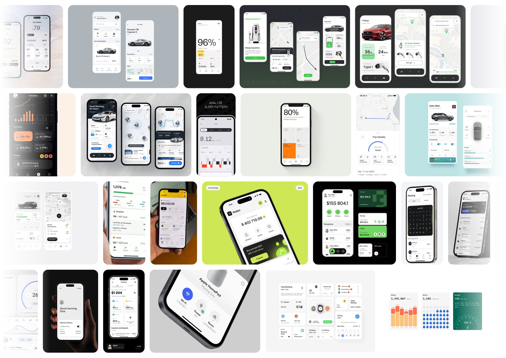
The onboarding needed to collect a lot from new users: email, password, charger license, serial number, battery size, and connection confirmation. One task per screen with clear conditional logic kept it from feeling heavy.
Six focused steps felt lighter than any single long form. Users always knew exactly what they were being asked to do.
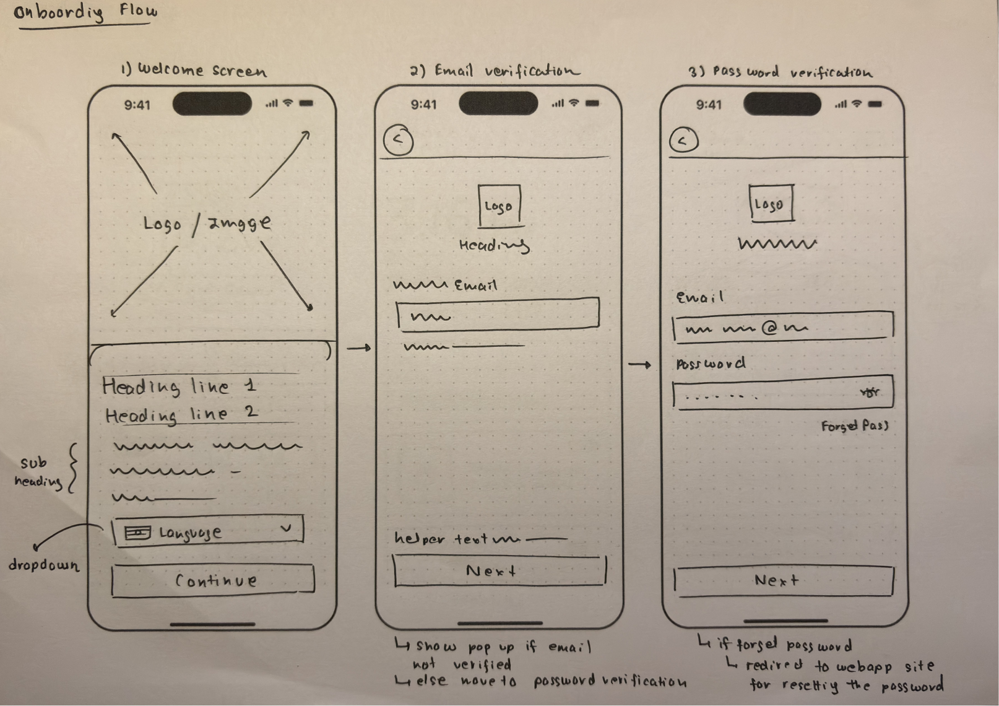
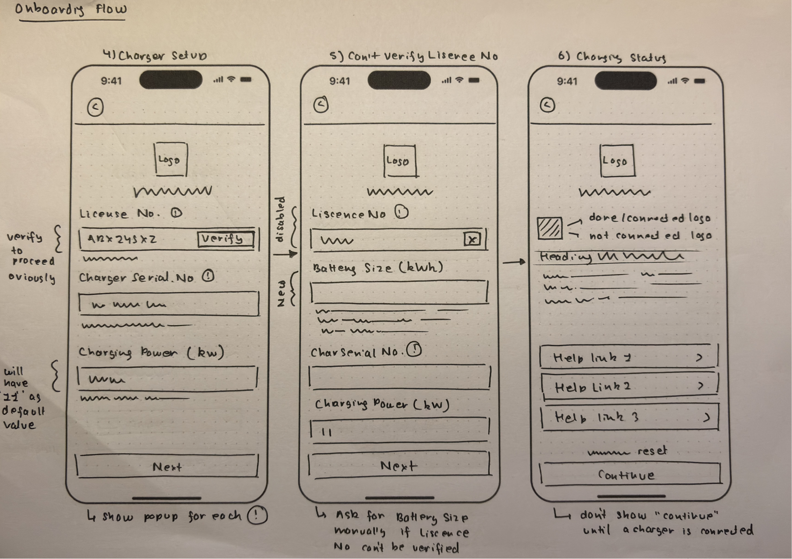
Three concepts were explored before landing on the final direction.
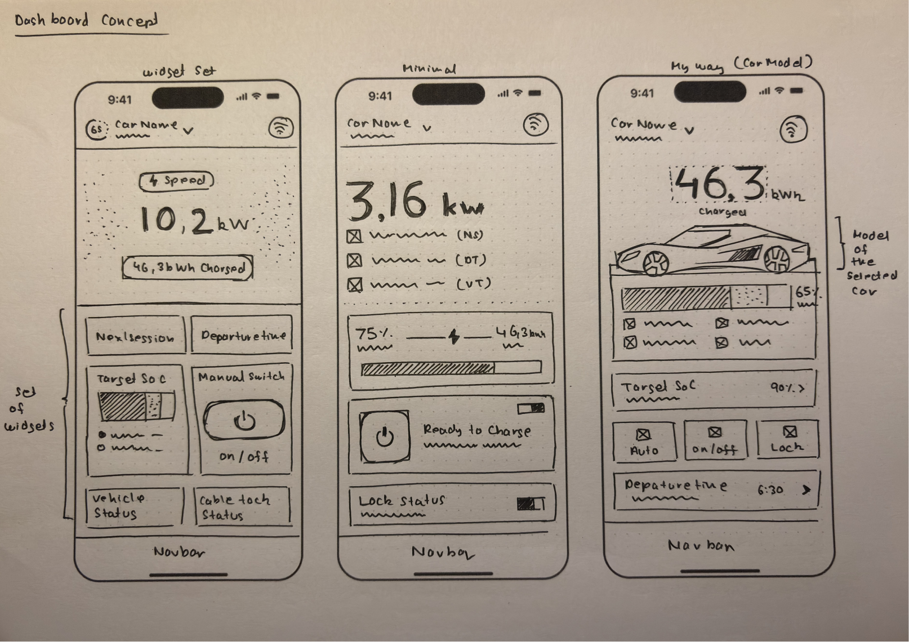
| Widget Set | Minimal | My Way |
|---|---|---|
| Every metric in its own card. Felt like a cockpit. Hard to scan at a glance. | Stripped back, text-heavy. Felt like a diagnostic report. Clean but emotionally cold. | Vehicle image anchors the screen. Felt personal and immediate. Clear hierarchy from first sketch. |
The vehicle image was not cosmetic. It told users immediately which car they were managing and made the experience feel personal rather than generic.
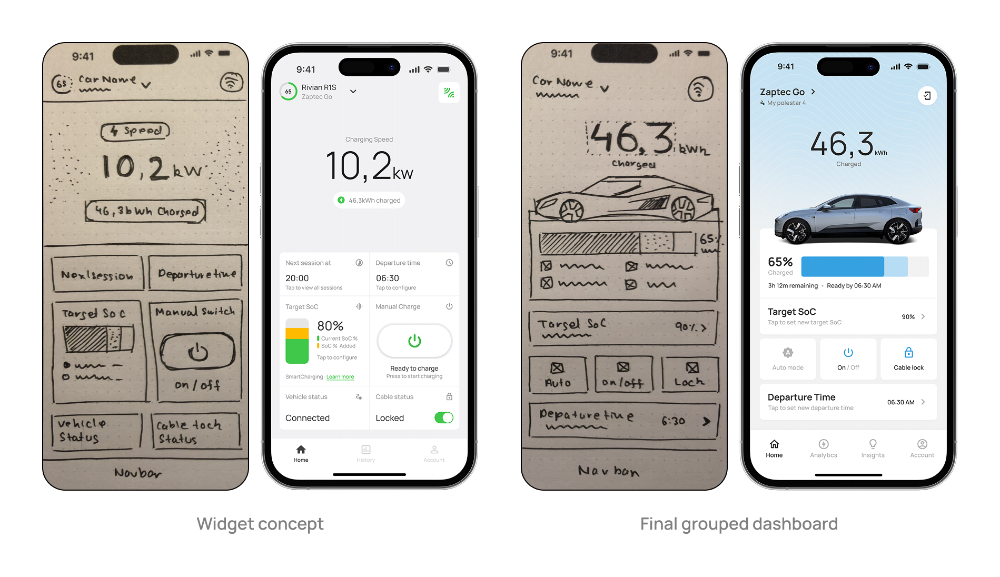
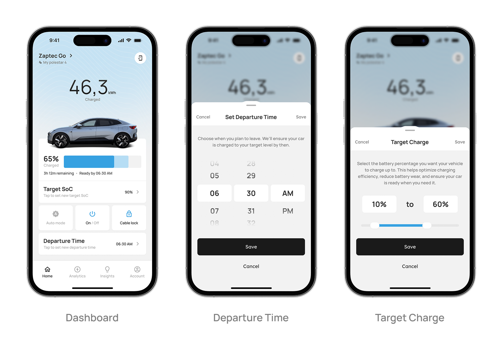
Each metric began isolated in its own card. In the final dashboard related data shares one visual block, the Auto, On/Off, Lock controls have a unified row, and the screen can be scanned in under two seconds.
Good design is often about deciding what not to show separately, not what to cut entirely.
Stakeholders suggested reducing spacing around the charging indicator to fit more data. I pushed back with user reasoning, not preference. Older users reading a dense screen work harder to find what they need. White space was doing real usability work.
Resolution: Secondary controls moved to modals. White space stayed.
“This looks cleaner” loses. “Here is what our user is doing at 7am” wins.
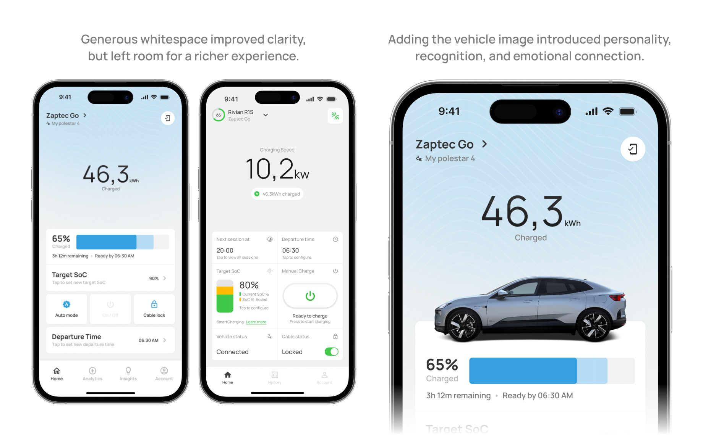
The compact row shows the current value and a chevron. Full controls open in a modal on tap, and the dashboard stays reserved for read-only data. Important settings should not be easy to change by accident.
The vehicle image was in the very first concept sketch, not a late addition. During design review, the CEO and I noticed how Tesla showed your actual car, not a generic icon. Building it took time: vehicle APIs, custom assets, model cutouts. But the sketch shows I knew from the beginning this was the right direction.
Sometimes the most impactful decision is not about layout. It is about making someone feel something about their product.
Beta users opened the app, checked battery percentage, glanced at the ready-by time, and closed it. Four seconds. Everything else went unlooked at.
| Stayed on Dashboard | Moved to Analytics | Moved to Settings |
|---|---|---|
| Battery %, time remaining, ready-by Auto, On/Off, Cable Lock | Cost savings, energy usage, session history | Connection status, vehicle management, account, language, security |
A dashboard answers the most important question the user has right now. Everything else waits one tap away.
We designed a double-ring clock widget showing the algorithm's charging schedule. Inner ring for today, outer ring for the next day. Electricity price data in Denmark does not reset at midnight, so sessions could spill past 12am. The two rings solved that technically.
| What we assumed | What users experienced |
|---|---|
| Two rings clearly separate today vs tomorrow. Legend explains the color coding. Showing the schedule builds trust. | Confusing with no obvious starting point. Users did not read the legend first. Complexity made them question the algorithm. |
Beta users found it mentally taxing. The deeper problem was not the visual. It was the concept. The algorithm's job is to remove decisions from the user, not explain its own logic to them. We removed the feature entirely. Trust came back when the complexity disappeared.
A feature that requires explanation has already failed. The best interface for a smart system is one that makes the system feel invisible.
35 screens across 5 core flows: onboarding, dashboard, charging session, analytics, and settings. Designed for iOS and Android.
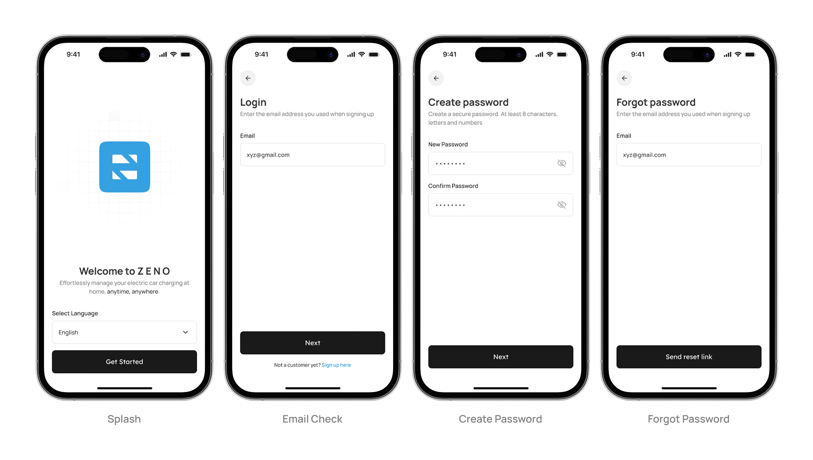
One task per screen. Clear conditional logic at every step.
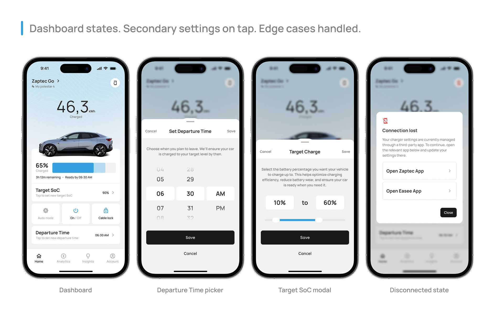
One screen. Everything visible immediately. No hunting, no scrolling.
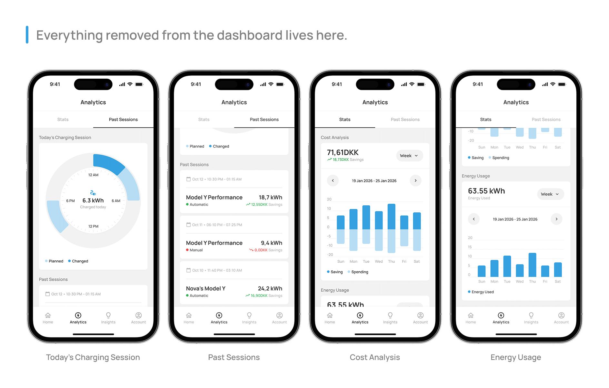
Everything removed from the dashboard lives here. Assembly rather than invention. The design system paid off here.
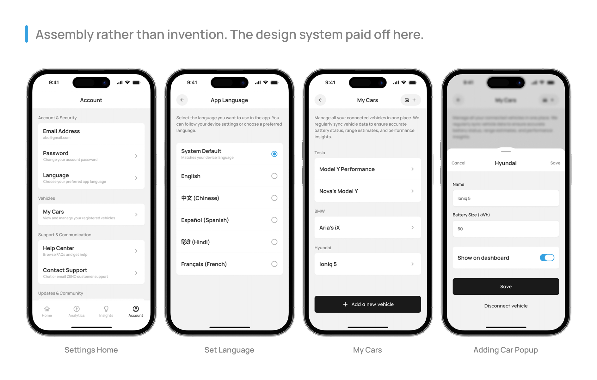
Manual component updates across 35+ screens for months. Design tokens and component libraries should be day one, not an afterthought.
Decisions debated for days became obvious the first time a real user touched the screen.
One sentence per key decision, written at the time, would have made this case study significantly more accurate.
“Simplicity is not the absence of complexity. It is evidence that someone worked very hard to hide it in exactly the right places.”